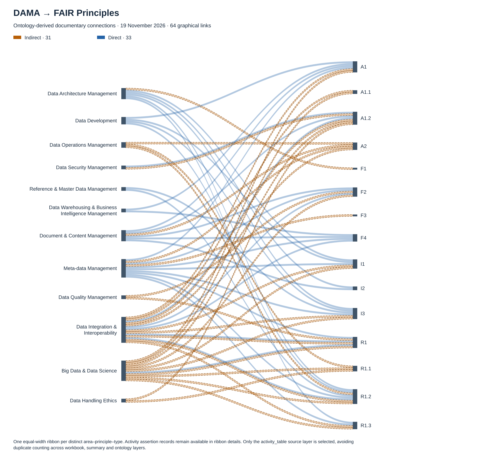

Which DAMA areas and topics have source activity assertions supporting each FAIR principle, and with which Direct/Indirect type?
One equal-width ribbon per distinct area–principle–type. Activity assertion records remain available in ribbon details. Only the activity_table source layer is selected, avoiding duplicate counting across workbook, summary and ontology layers.

Interactive diagram · Offline interaction · PNG · SPARQL · Extracted rows